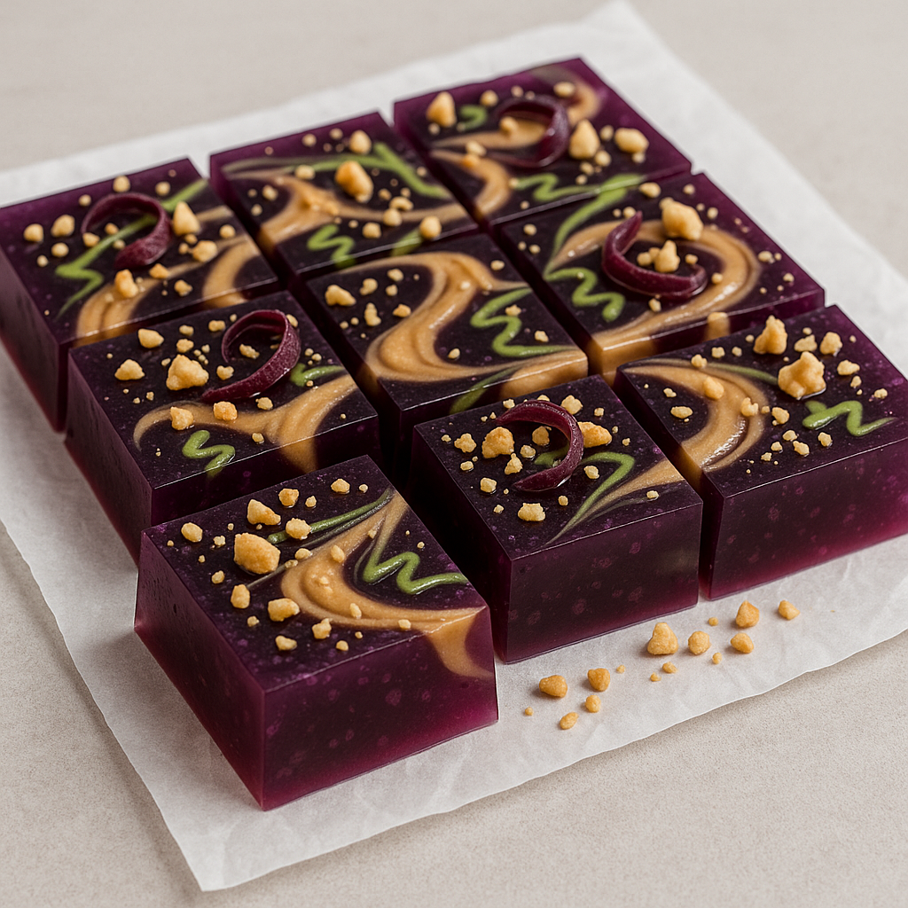

Back to Home
Wasabi PBJ Jello Bar

Description
Ingredients
- 1½ cups dill pickle brine (from the jar)
- 1 cup finely diced dill pickles
- 1 cup boiling water
- 1 cup vanilla pudding
- crushed pretzels
- 1 tbsp sugar
Steps
- In a bowl, mix dill pickle brine and sugar until dissolved.
- In a separate bowl, dissolve vanilla pudding in boiling water.
- Combine the pudding mixture with the dill pickle brine.
- Add finely diced dill pickles, stirring well.
- Layer the mixture with crushed pretzels in a parfait glass.
- Refrigerate until set, then serve chilled.